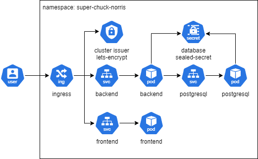

Kubernetes documentation
Technical stack
- Container orchestration: Micro K8S
- Gest OS for K8S: Ubuntu ARM64
Requirements
- All container and your software inside need to be compiled on ARM64 architecture
- A ARM64 VM
- A DNS and a Let's Encrypt configuration
Installation
I wanted to find hosting based on ARM64 for both financial and ecological reasons. After some research, I decided to go with Hetzner for my VM order, as it was the cheapest option I found with hosting in Europe. I absolutely wanted a container orchestration based on K8S. I could have opted for a managed K8S service in a public cloud like AWS, but the exorbitant price quickly discouraged me. Therefore, I decided to use Micro K8S, which is compatible with ARM64. For the installation, I simply followed the official documentation.
List of addon to enable:
- cert-manager # (core) Cloud native certificate management
- community # (core) The community addons repository
- dashboard # (core) The Kubernetes dashboard
- dns # (core) CoreDNS
- ha-cluster # (core) Configure high availability on the current node
- helm # (core) Helm - the package manager for Kubernetes
- helm3 # (core) Helm 3 - the package manager for Kubernetes
- hostpath-storage # (core) Storage class; allocates storage from host directory
- ingress # (core) Ingress controller for external access
- metrics-server # (core) K8s Metrics Server for API access to service metrics
- observability # (core) A lightweight observability stack for logs, traces and metrics
- registry # (core) Private image registry exposed on localhost:32000
- storage # (core) Alias to hostpath-storage add-on, deprecated
Architecture Diagram

The namespace needs to be set to "chuck-norris" due to the sealed secret. The database dump needs to be injected manually through a port redirection and psql.
Port forwarding and inject dump:
kubectl port-forward -n chuck-norris <postgres-pod-name> 5432:5432
psql -h localhost -p 5432 -U postgres -d chuck-db < /path/to/dump.sql